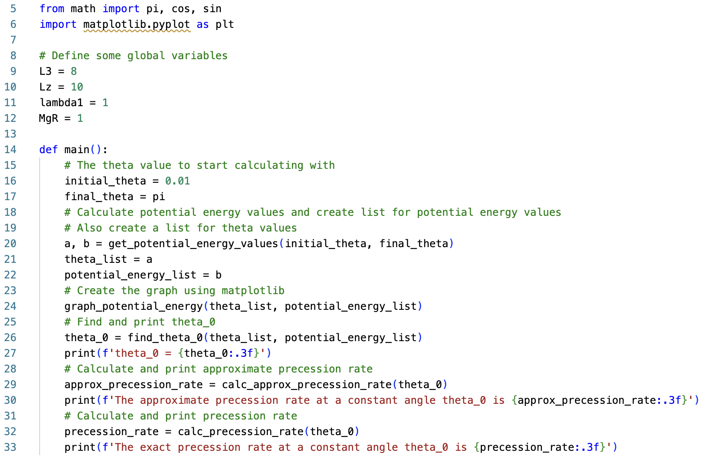

Top Nutation
Description
This project was the cumulation of everything I learned about programming with functions. I wrote a program that uses several functions I created to visualize the rotation of a top and find an angular frequency at which the top can rotate with a constant vertical angle (theta). To do this, it first calculates the potential energy (a function of theta) for a range of theta values. Then it creates a graph of the potential energy vs theta. After that the program finds the minimum potential energy and the theta value corresponding with that. The program then takes that theta value and uses it to calculate the approximate and exact angular frequencies for that constant theta value.
Explanation
Nutation is a swaying or nodding motion in the rotation axis of an object that is mostly symmetrical about that axis. Think of the tilt in the earth’s axis. The precession rate of an object is how its nutation changes over time. This program focuses on the nutation of a top, which is controlled by its effective potential energy. The main function of this program calls all the other functions within the program to calculate the vertical angle and the potential energy, graph the potential energy vs. the vertical angle, find the angle associated with the minimum potential energy, and finally calculate the approximate and exact precession rates.
Learn More